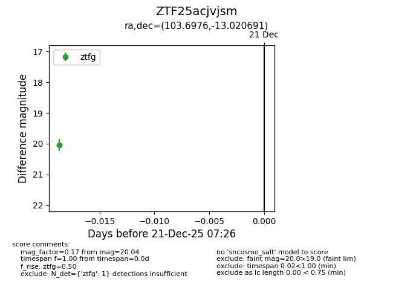
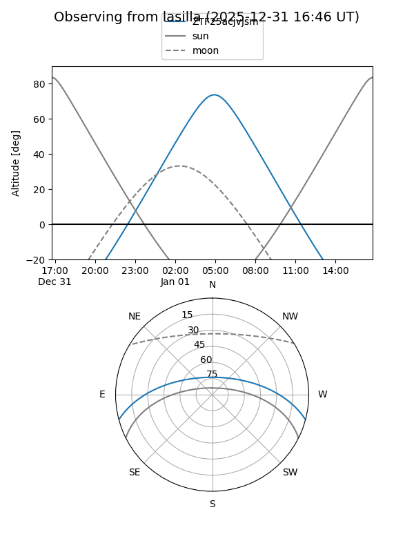
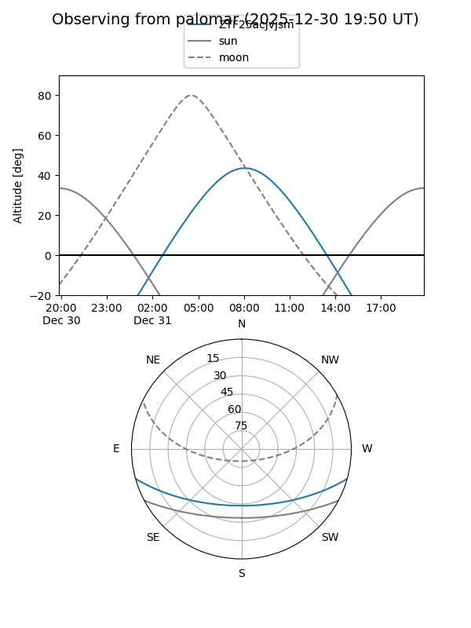

ZTF25acjvjsm
Target ZTF25acjvjsm at 2025-12-31 17:00
Aliases and brokers:
FINK:
Lasair:
ALeRCE:
alt names
ZTF25acjvjsm (ztf,fink_ztf)
Coordinates:
equatorial (ra, dec) = 103.6976,-13.02069
equatorial (HMS+DMS) = 06:54:47.42,-13:01:14.49
galactic (l, b) = (224.9289,-5.16653)
Flags:
Photometry:
last ztfg=20.04
1 ztfg detections
Lightcurve

Visibility


Additional plots